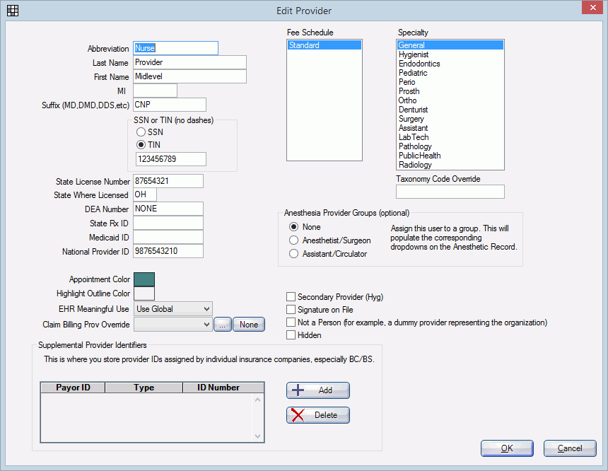

eRx Ohio
There are some additional steps required by Ohio prescriptions (paper or eRx). Below is set up information to help you comply.
Paper Prescriptions
Paper prescriptions generated in Open Dental can be customized using sheets. See Rx Layout or Rx Multiple Layout.Written prescriptions: Cannot use check boxes to determine if generic substitution is permitted. The rule states that the prescriber must hand write in wet ink "DAW" or Dispense as Written. For an XML prescription template that matches the format requirements, see Open Dental forum post Ohio Rx Template.
Controlled substances: Ohio requires that prescriptions for controlled substances include a CDT procedure code. We are currently working to link the prescription to the procedure code in Open Dental. In the meantime, here are two possible solutions.
- Add a static text field, surrounded by a rectangle box, then handwrite the CDT code once it is printed.
- Add ServiceNote as a static text field (see Sheet Static Text Field) then enter the procedure code in the service note field of the Medical. The downside is that you may have to clear out any other service notes you have already entered and clear the code after printing the prescription.
Legacy eRx Users
If using eRx, Ohio requires the following from providers who e-prescribe. Below are instructions if using Legacy eRx.
- Controlled substances: Prescriptions for controlled substances must include a CDT procedure code. In Legacy eRx, add the CDT code to the pharmacist's message on the Pending Rx window (see NewCrop eRx / Prescription). To set up automation options in Open Dental, see Automation, RxCreate trigger.
- Prescriber Report: Pursuant to OAC 4729-5-01(N), you must review and sign a Prescriber Report every day. This report provides legal signatures on electronic prescriptions and fax.
To generate in Legacy eRx:
- In the interface, click the Admin tab.
- Click Prescriber Report.

- Select the date, then click Printer Friendly.

- Click Print to print the report.

- Sign the report. You must keep all reports on site in a folder/notebook for at least 3 years.
Reminder to Review/Sign Prescriber Report: Use Automation to set a daily electronic reminder to sign and review the Prescriber Report.

Mid-Level Provider Requirements:To set up a mid-level provider:
- In the Providers, create a new provider. In the Suffix field, enter the Ohio credentials required. In the State License Number field, enter the mid-level provider's CTP#.
- Create a User Security Profile and attach the user to the provider.
Now when logged in as the mid-level provider, the information required by Ohio will be sent to Legacy eRx.
